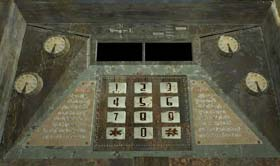

| 概要 | 地図 | |
| 淡いヒント集 | ヒント集 | 的確なヒント集 |
| 攻略最短ルート | Syberia 攻略へ |
| << 前の段階へ | 地域選択へ | 次の段階へ >> |
バロクシュタット
|
駅にて(後半)
演奏台を修理したあなたは、学長達から要求した金額の資金をもらえただろう。もう、あなたがすべきことはただ一つ。ゼンマイを巻く装置の所まで機関車を動かすことだけだ。ただし、ポンス教授の講義が始まる前に、だ。 ・お金を船に乗っている人に渡す ・水門を開く ・船が移動したのを確認し、水門を閉じる ・船と機関車をフックでつなぐ ・機関車を移動する ・ポンス教授の講義を受ける いよいよ、この土地での冒険も終わりに近づいている。
船に乗っている人

・機関車を動かす前に、お金を渡さなくてはならない。 ・お金を渡せば、彼らは水門を制御する装置の鍵をくれるだろう。
水門を制御する装置
  ・鍵を使えば、パネルが開くだろう。 ・パネルを見ると、ボタンがいくつかある。どのように押せばいいのだろうか。 ・手がかりは電話をすると、手にはいるだろう。看板に書いてある番号に電話を掛ける必要がある。 ・備え付けの電話は壊れているので、携帯電話を使おう。 ・アナウンスの内容は最後まで正確に聞かなくてはならない。
水門を開いたら・・・

・水門を開いたら、船が移動するだろう。しかし、開いただけでは不十分なのだ。 ・機関車の戦闘まで船を移動させるには、水門を閉じなくてはならない。 ・水門の開き方分かったのならば、閉じるのもさして難しくはないだろう。
船を動かしたら・・・

・水門を操作し、船を動かし終えたら、どうしたらよいのだろうか? ・船に乗っている人に尋ねるべきだ。鎖を投げてくれるだろう。 ・鎖と機関車をつなぐには何かが必要だ。何を使えばいいだろうか?
講義室
・講義室へ行くには、大学は言ってすぐのマンモスの化石の横にある階段を上ればよい。 ・講義は最後まで静かに聞こう。 ・話の内容はストーリーに深く入り込んでくるはずだ。 |
| << 前の段階へ | 地域選択へ | 次の段階へ >> |
| 概要 | 地図 | |
| 淡いヒント集 | ヒント集 | 的確なヒント集 |
| 攻略最短ルート | Syberia 攻略へ |
Syberia
| 目次へ戻る | ページの上部へ |